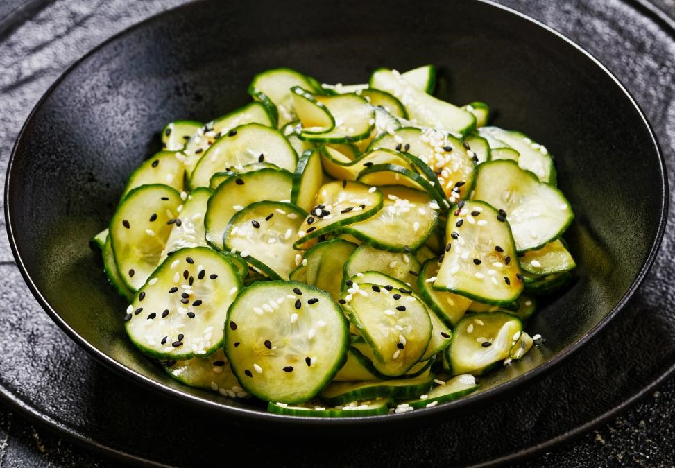
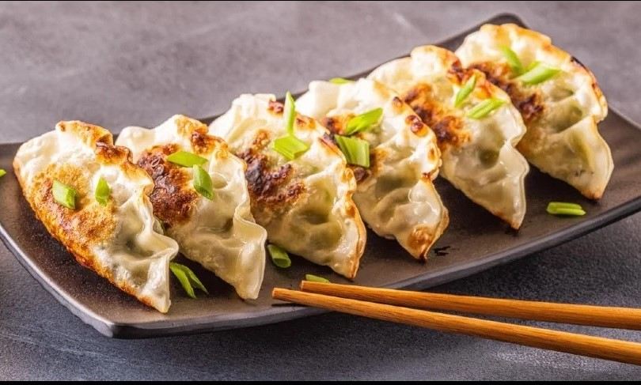
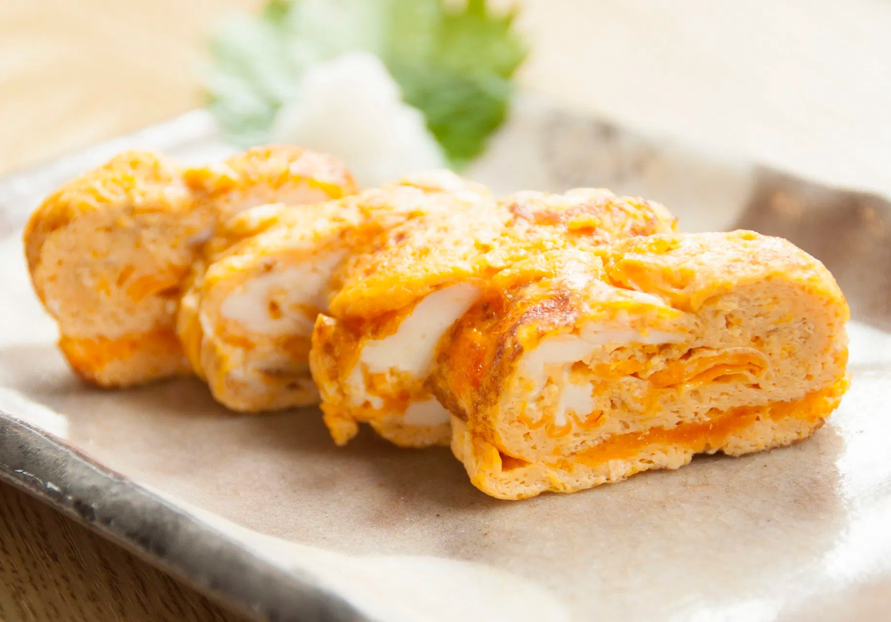
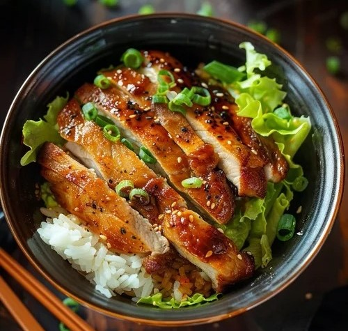
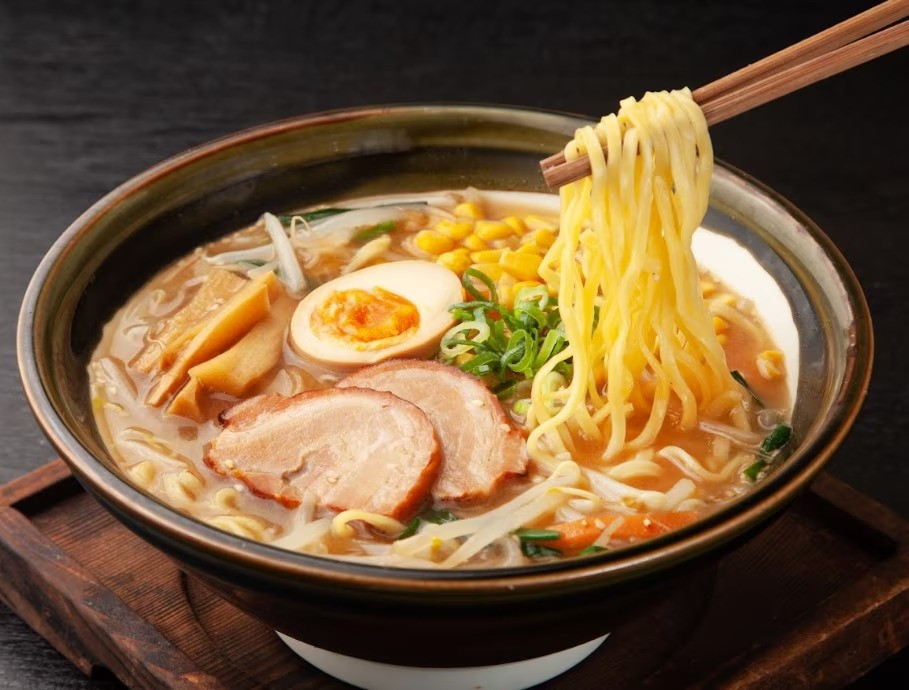
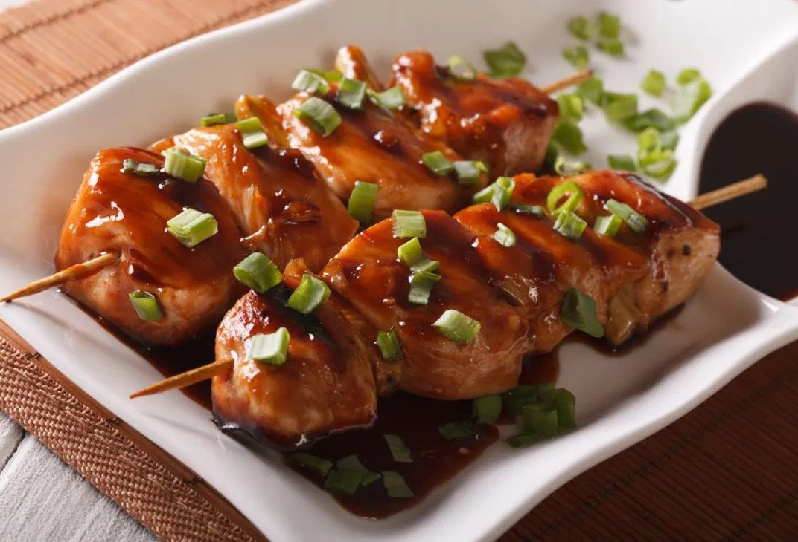
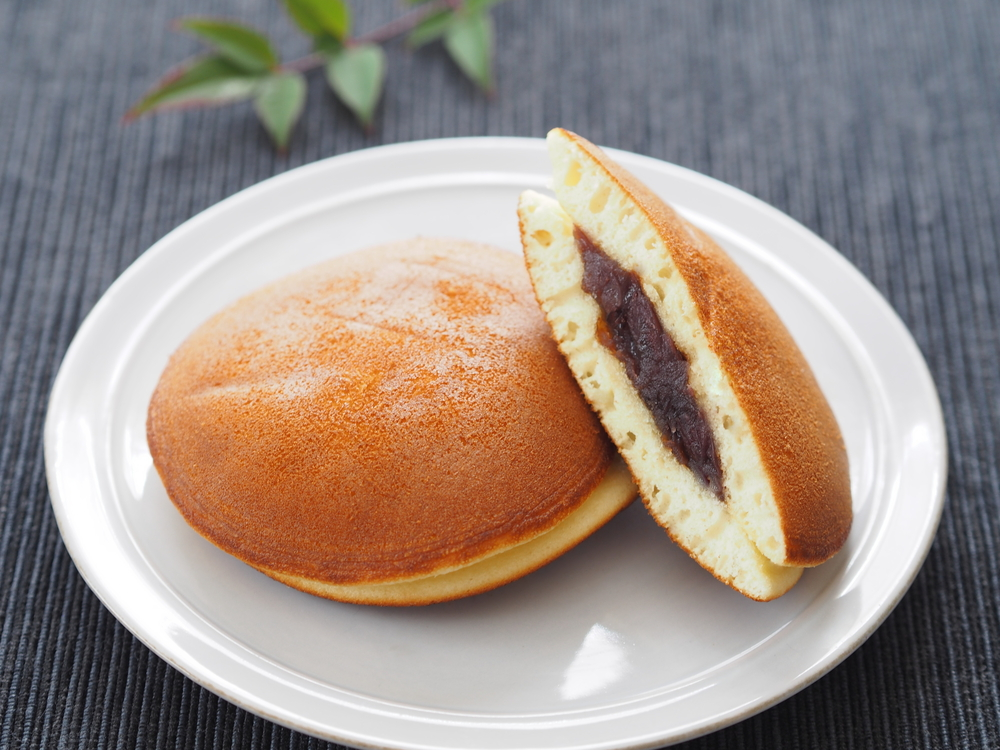

Menú
Entrantes

Miso Shiru
Sopa de miso con tofu y algas.
€4.50

Sunomono
Ensalada de pepino con vinagreta de sésamo.
€3.80

Gyoza
Empanadillas rellenas de carne y vegetales.
€5.50

Tamagoyaki
Omelette japonés dulce y esponjoso.
€4.00
Plato Principal

Sushi Variado
Variedad de sushi con pescado fresco.
€12.00

Donburi
Arroz con carne, pescado o vegetales.
€9.50

Ramen
Sopa de fideos con caldo sabroso.
€8.00

Yakitori
Brochetas de pollo a la parrilla.
€6.50
Postres
Mochi
Bolitas de arroz rellenas de pasta de frijol dulce.
€4.00

Dorayaki
Pastelito relleno de pasta de judía roja.
€3.50
Taiyaki
Pastelito con forma de pez relleno de pasta dulce.
€5.00

Anmitsu
Postre con agar-agar, frutas y jarabe dulce.
€4.80